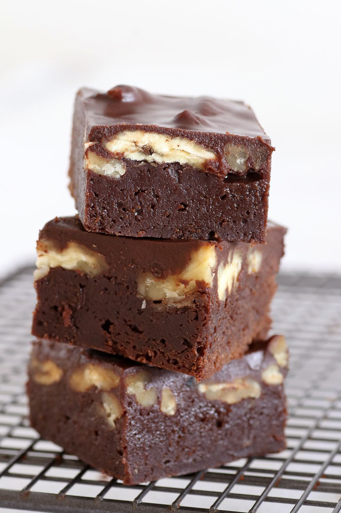

Giant Chocolate Chip Cookies

לפעמים הכנה של עוגיות יכולה להיות קצת “תיק”. לגלגל אחת-אחת, לאפות בנאגלות, לסדר בצנצנת – כל הדברים האלה לוקחים זמן ו-וואלה – לפעמים בא לי לתקתק. כך נולד המתכון הבא. רציתי להכין עוגיות שוקולד צ’יפס, אבל היתה לי מגבלת זמן קטנה. החלטתי לשטח את כל הבצק בתבנית עגולה ולאפות הכל יחד.
בתום האפייה חתכתי את העוגייה הענקית למשולשים גדולים, ממש כמו שפורסים עוגה עגולה. כל מי שטעמו מהעוגיה הענקית הזאת התלהבו ממש וביקשו מתכון. היא ממש קלה להכנה, על בסיס קמח שקדים בלבד, כך שתתאים גם לצליאקים וגם לפסח המתקרב. רק אל תוותרו על המלח!
Ingredients
- 150 grames of almond flour
- 80 grames of melted coconut oil (or 100 grames of melted butter)
- 1 large eggs
- 150 grames of suger (or a 3/4 of a cup)
- 100 grames of peanut butter
1 teaspoon of vanila extract
1 teaspoon of baking soda
200-250 grames of chocolate chip
- a bit of salt
Steps
- מחממים תנור ל-180 מעלות ומשמנים את התבנית.
- בקערה גדולה מערבבים יחד קמח שקדים, סודה לשתייה, מלח וסוכר לתערובת אחידה
- מוסיפים שמן קוקוס, חמאת בוטנים, וניל וביצה ומערבבים בידיים עד שמתקבל בצק אחיד.
- מוסיפים כ-200 גרם מהשוקולד הקצוץ ומערבבים עד שהוא מתפזר בבצק.
- מעבירים את הבצק לתבנית משומנת ומהדקים לשכבה אחידה.
- אם רוצים, אפשר להוסיף מעל העוגייה עוד שוקולד צ’יפס ומומלץ לפזר מעט מלח ים גרוס.
- אופים במשך 20-25 דקות או עד שמתקבל גוון זהוב עמוק.